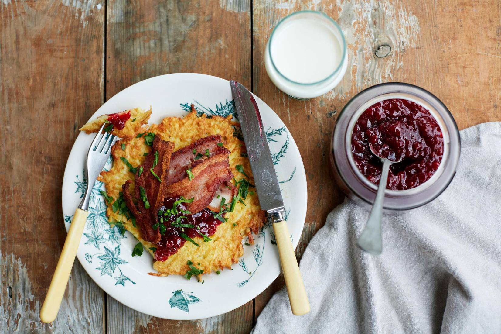

Swedish Potato Pancakes

Description
Potato pancakes might sound a bit unusual but this is another classic Swedish dish.
Follow this easy potato pancake recipe and serve it with bacon and lingonberry jam for the full experience.
Ingredients
- 2 cups of whole milk
- 3/4 cup of wheat flour
- 2 teaspoons salt
- 1 large egg
- 800g potatoes
- Butter
Steps
- Whisk together milk and flour in a bowl. Mix eggs and salt.
- Grate the potatoes on the fine or coarse part (more a matter of taste and what you like) of a grater and mix them into the batter.
- Let it rest for 30 minutes before frying the potato pancakes.
- Heat a generous dollop of butter in a frying pan. Pour about ½ cup of batter in the pan and fry to a thick pancake
- Fry on medium heat on both sides until the pancake is golden brown and crispy on the edges.
- Be careful not to overheat so that they get color before the potatoes is actually cooked, it takes about 4 minutes per side.
- Place the pancakes on a plate or in a baking dish and put them in the oven to keep them heated, on about 165 degrees Fahrenheit.
- Fry the bacon or sliced pork until they are golden and crispy, then let them drain on some paper or kitchen towels.
- Serve the warm potato pancakes with fried bacon or pork and lingonberry jam.